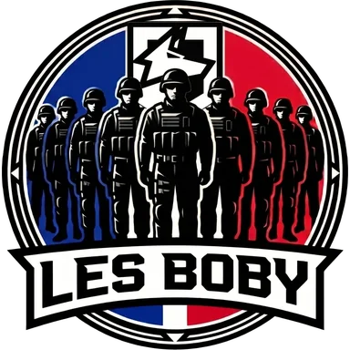

Dernier tip · Tip n°6
Pluie et orage : adapte ton jeu
Depuis la Saison 2, la pluie et l'orage réduisent la visibilité et couvrent certains bruits. Trois réflexes pour ne pas te faire surprendre.
Tous les tips →
Équipe & commu Wardogs FR
On fait des scrims et des matchs amicaux contre les autres commus, sans prise de tête. Tous niveaux, tant que tu joues collectif.
Le club
Les BOBY, c'est une commu française de Wardogs. On se retrouve en vocal sur le Discord, on monte des escouades et on enchaîne les parties sur notre serveur. Quand l'envie de se mesurer aux autres nous prend, on organise un scrim contre une autre commu. Ton nombre d'heures de jeu importe peu, on regarde surtout si tu joues pour l'escouade.
Rejoindre
L'accès est libre, tu peux déjà trouver des joueurs et lancer des parties avec tout le monde.
Rejoindre le DiscordOn te pose quelques questions rapides pour faire connaissance. Pense à lire le règlement avant.
Lire le règlementTu deviens un BOBY et tu as accès à tout le Discord, salons du club et scrims compris.
Voir le compétitifJuste envie de jouer ? Pas besoin d'être un BOBY, le serveur est ouvert à tous.
Guides & tips
Dernier tip · Tip n°6
Depuis la Saison 2, la pluie et l'orage réduisent la visibilité et couvrent certains bruits. Trois réflexes pour ne pas te faire surprendre.
Tous les tips →Bakurani, Ozeti, Zestafona : à quoi ressemblent les cartes de Wardogs, comment les lire, et ce qui change d'une zone de contrôle à l'autre.
Transports, hélicoptères, chars, artillerie : ce que coûtent les véhicules de Wardogs, ce qu'ils rapportent, et le bon moment pour sortir chacun.
Le cash de Wardogs te suit de partie en partie. Ce qui rapporte, ce qui coûte, et comment garder un solde positif sans jouer petit.
Tu débarques sur Wardogs ? Le but d'une partie, le cash, l'escouade, et dix réflexes pour tes premières soirées, sans te faire laminer.
Compétitif
On organise des scrims contre les autres commus françaises et on prépare une équipe pour la future ligue Wardogs FR. Pas besoin d'être un monstre, il faut surtout jouer collectif et répondre présent.
Le serveur et le site tournent grâce à la commu.